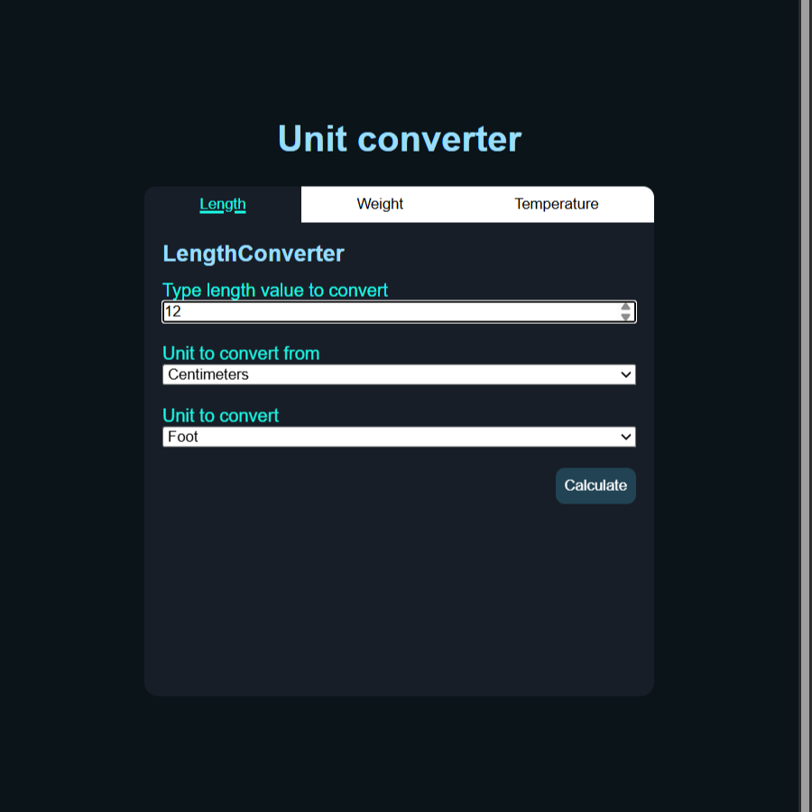
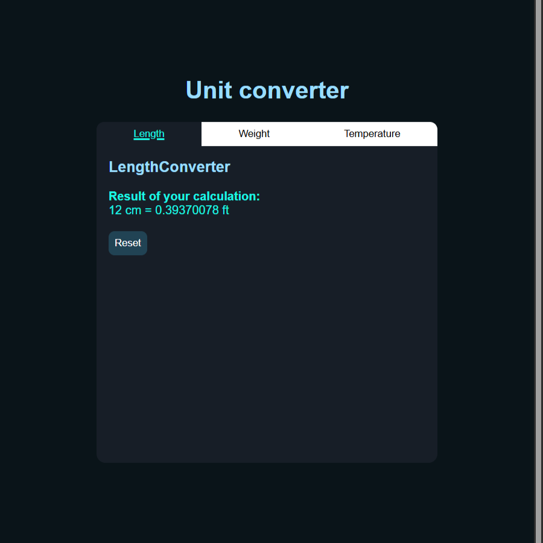

Convertidor de unidades
Proyecto creado como uno de los retos de Roadmap.sh
Aplicación de full stack diseñada con .NET 10, html, css y js para resolver el reto de roadmap.sh "Convertidor de unidades".
Características
- Api convertidora de unidades
- Interfaz de usuario web para la conversion de unidades
- Validación de datos
- Conversion de longitud, peso y temperatura
- Interfaz tipo pestaña para las distintas conversiones
- Conexión fullstack de servicios
- Manejo de errores
Instalación
-
Clona el repositorio
git clone https://github.com/juanharodev/juanharodev.github.io.git -
Abre la una terminal y navega hasta la carpeta del proyecto
cd /portfolio/roadmap-sh/backend/05-unit-converter -
Restaura las dependencias del proyecto
dotnet restore -
Compila el proyecto
dotnet build -
Abre "/portfolio/roadmap-sh/backend/05-unit-converter/program.cs" e indica el puerto que usaras como servidor web
string localHostPort = "http://XXX.X.X.X:XXXX"; -
Inicia el servicio de la API corriendo la aplicación
dotnet run -
Inicia un servidor web local, como vscode live server (usada personalmente) y en el navegador abre "/portfolio/roadmap-sh/backend/05-unit-converter/pages/"
¿Cómo se usa?
Una vez iniciada la API y el servidor web, abre "/portfolio/roadmap-sh/backend/05-unit-converter/pages/" y usa la interfaz gráfica para realizar las distintas conversiones disponibles
También puedes ver el funcionamiento de la interfaz de conversion aunque no obtendrás resultados debido a la falta de la funcionalidad de la API
Ejemplo de uso

